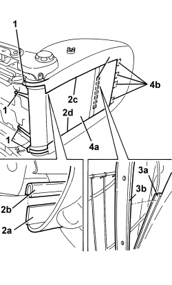
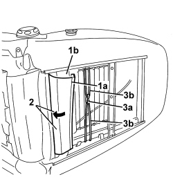
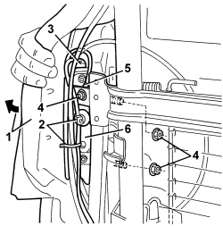

5580C44 FRONT SIDE BAG MODULE (ONE) LH OR RH - R.R
- Path
- Procedures > 55 ELECTRICAL EQUIPMENT > 5580 SPECIAL ACCESSORIES > 5580C AIR BAG SYSTEM > 5580C44 FRONT SIDE BAG MODULE (ONE) LH OR RH - R.R
- Kind
- repair procedure (removal / refitting; the operation number is the code)
- Applies to
- all engines; all production periods
- Interactive page
- https://sloeber94.github.io/elrnDB/alfa/159/en/#/939011098
Applies to: all engines; all production periods
 Removing
Removing
 Refitting
Refitting- Extract the electronic key.
- Disconnect the battery leads and insulate them.
- Wait for 10 minutes before continuing.
Op. 7045A10 FRONT SEAT (ONE), LEFT OR RIGHT - R.R.
Op. 7045A25 FRONT SEAT BACKREST LUMBAR ADJUSTMENT KNOB (ONE), LEFT OR RIGHT - R.R.
1. Lower the trim and padding (1a) and release the panel of lumbar adjustment knob (1b) from retainers (1c).

Applies to: all engines; all production periods
1. Disconnect the backrest trim links.
2. Release retainers (2a) from retainers (2b) along vertical sections (2c) and (2d).
3. Disconnect retainer (3a) from crossmember (3b).
4. Remove rear pane (4a) by releasing from upper retainers (4b).

Applies to: all engines; all production periods
1. Release retainer (1a) of the upper edge of the backrest trim from metal profile (1b).
2. Press the disconnected edge in the upper part of the seat.
3. Disconnect retainer (3a) by releasing links (3b).

Applies to: all engines; all production periods
1. Push the trim and padding slightly aside to gain access to the airbag module.
2. Cut the wiring retaining bands.
3. Disconnect the electrical connection.
Description | Component |
|---|---|
DRIVER'S SIDE BAG | |
PASSENGER SIDE BAG |
4. Undo the nuts fixing the Air Bag module.
5. Disconnect the electrical earth connection.
6. Remove the Air Bag module.

Applies to: all engines; all production periods
- Place the Air Bag module in the special cupboard resting it on a free surface with the bag facing upwards.
Applies to: all engines; all production periods
Refitting
Removing- Observe the following precaution.
- If a new module is being fitted, position the labels as described below.
- Remove the detachable part of the adhesive label from the new module. Place a copy of the label in a special folder containing the vehicle details (model, registration date, chassis number) and the serial number of the old module. The file should be kept for future checks.
Fit the detachable part of the original label on the lower part of the seat, where similar labels for the seat, the backrest cover and the Air Bag wiring can already be found. Beforehand, however, it should be perforated at the month and 14 years after the year in which the module is being fitted (e.g. 2005 for 2019).
- Remove the Side Bag module.
- Connect the electrical earth connection.
- Tighten the nuts fixing the Air Bag module.
Component | Fastening | dia | Value (daNm) | Validity |
|---|---|---|---|---|
SIDE AIR BAG MODULE | Nut | M5 | 0.4 ÷ 0.6 |
- Connect the electrical connection for the Air Bag module.
- Fit the retaining bands on the wiring.
- Position the trim with padding in its housing.
- Tension the links and connect to the retainer.
- Position the front edge of the backrest trim in its seat and connect to the metal profile.
- Position the rear panel and do up the upper retainers.
- Connect the retainer to the crossmember.
- Connect the rear panel vertical retainers.
- Connect the backrest trim links.
- Attach the lumbar adjustment knob panel to the retainers.
Op. 7045A25 FRONT SEAT BACKREST LUMBAR ADJUSTMENT KNOB (ONE), LEFT OR RIGHT - R.R.
Op. 7045A10 FRONT SEAT (ONE), LEFT OR RIGHT - R.R.
- Use an Examiner to check that the system has not acquired errors during the operation.
Topics linked from this page (5)
- 5580C AIR BAG SYSTEM
- 7045A10 FRONT SEAT (ONE), LEFT OR RIGHT - R.R.
- 7045A25 FRONT SEAT BACKREST LUMBAR ADJUSTMENT KNOB (ONE), LEFT OR RIGHT - R.R.
- Q030 DRIVER'S SIDE BAG
- Q031 PASSENGER SIDE BAG